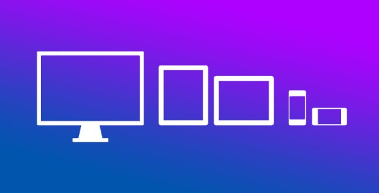

Media Queries allows one to add designs and structure to websites. One can see the website more in depth. Another benefit of Media Queries is using images to attract the audience. If a website lacked images or creativity, there will be a small audience. The weakness of Media Queries is ensuring correct coding. Its imperative to have clean code. Another disadvantage is bulkier code in html/css. Its easy to end up with bulkier code and often, one has to validate to eliminate errors.
